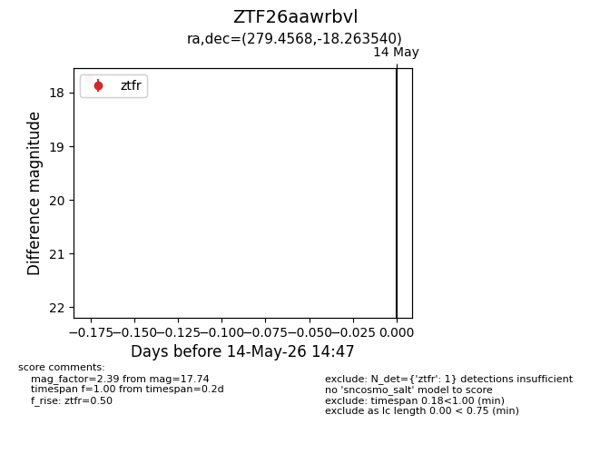
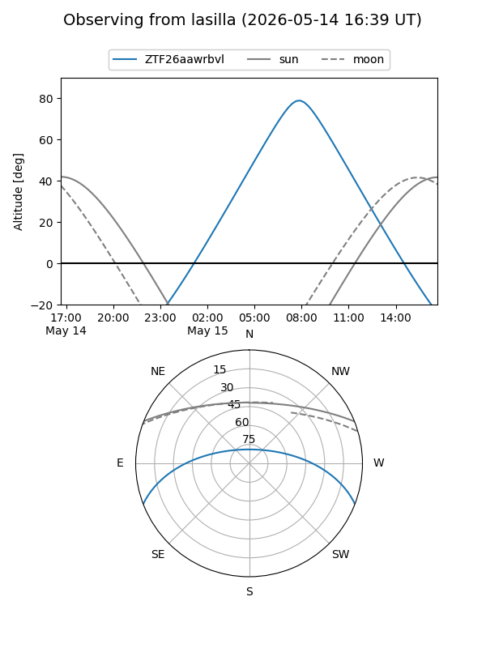
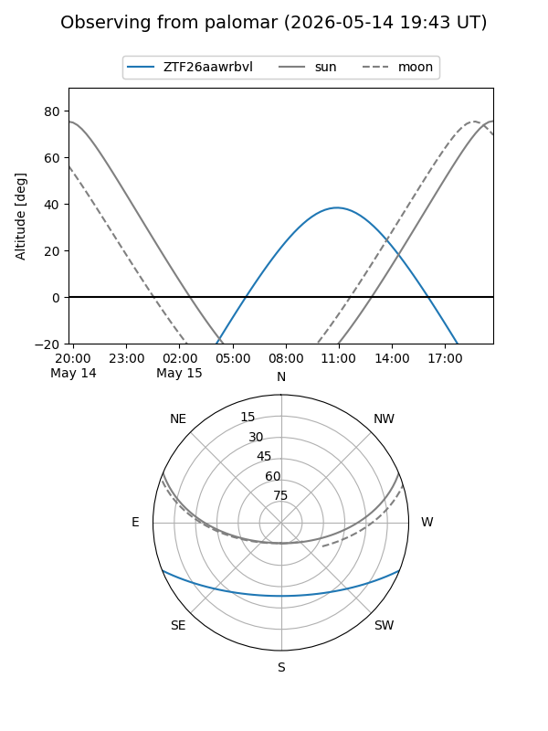

ZTF26aawrbvl
Target ZTF26aawrbvl at 2026-05-14 14:48
Aliases and brokers:
FINK: link
Lasair: link
ALeRCE: link
alt names
ZTF26aawrbvl (ztf,fink_ztf)
Coordinates:
equatorial (ra, dec) = 279.4568,-18.26354
equatorial (HMS+DMS) = 18:37:49.64,-18:15:48.75
galactic (l, b) = (15.1178,-5.32114)
Flags:
Photometry:
last ztfr=17.74
1 ztfr detections
Lightcurve

Visibility


Additional plots